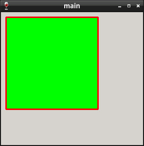

Steward
分享是一種喜悅、更是一種幸福
程式語言 - MinGW - C/C++ - Painting - Draw Rectangle
參考資訊：
http://www.winprog.org/tutorial/
http://winapi.freetechsecrets.com/win32/
https://github.com/gammasoft71/Examples_Win32
http://masm32.com/board/index.php?topic=3584.0
https://learn.microsoft.com/en-us/windows/win32/winmsg/window-styles
繪畫圖形需要透過SelectObject()去選擇Pen、Brush
main.c
#include <windows.h>
HWND hWin = NULL;
WNDPROC defWndProc = NULL;
LRESULT CALLBACK WndProc(HWND hWnd, UINT uMsg, WPARAM wParam, LPARAM lParam)
{
HDC hdc = NULL;
HPEN pen = NULL;
HBRUSH brush = NULL;
PAINTSTRUCT ps = {0};
switch (uMsg) {
case WM_CLOSE:
DestroyWindow(hWnd);
return 0;
case WM_DESTROY:
PostQuitMessage(0);
return 0;
case WM_PAINT:
hdc = BeginPaint(hWnd, &ps);
pen = CreatePen(PS_SOLID, 3, RGB(0xff, 0x00, 0x00));
brush = CreateSolidBrush(RGB(0x00, 0xff, 0x00));
SelectObject(hdc, pen);
SelectObject(hdc, brush);
Rectangle(hdc, 10, 10, 200, 200);
EndPaint(hWnd, &ps);
DeleteObject(pen);
DeleteObject(brush);
break;
}
return CallWindowProc(defWndProc, hWnd, uMsg, wParam, lParam);
}
int WINAPI WinMain(HINSTANCE hInstance, HINSTANCE hPrevInstance, LPSTR lpCmdLine, int nCmdShow)
{
hWin = CreateWindow(WC_DIALOG, "main",
WS_OVERLAPPEDWINDOW | WS_VISIBLE, 0, 0, 300, 300, NULL, NULL, NULL, NULL);
defWndProc = (WNDPROC)SetWindowLongPtr(hWin, GWLP_WNDPROC, (long int)WndProc);
MSG msg = {0};
while (GetMessage(&msg, NULL, 0, 0)) {
DispatchMessage(&msg);
}
ExitProcess(0);
return 0;
}
Line 26：畫一個長方形，起始點位置是(x=10, y=10)，結束點位置是(x=200, y=200)
編譯、執行
$ i686-w64-mingw32-gcc -mwindows main.c -o main.exe $ wine ./main.exe
